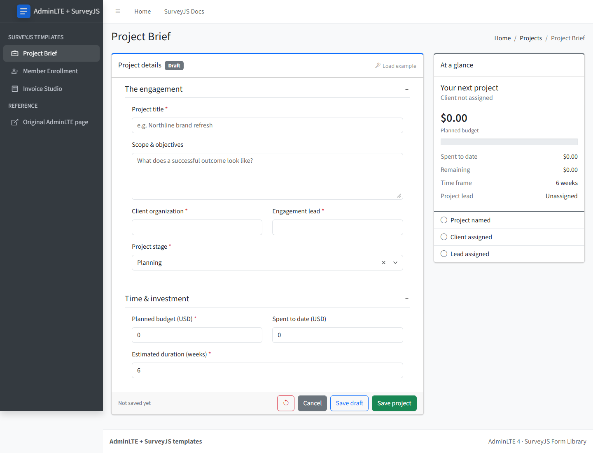
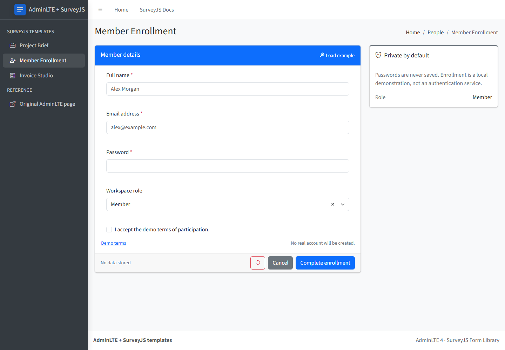
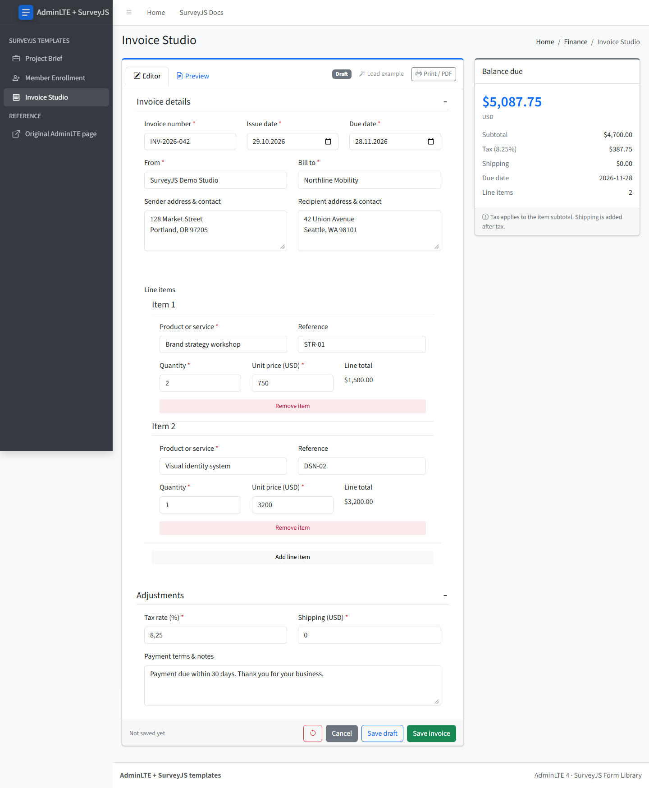
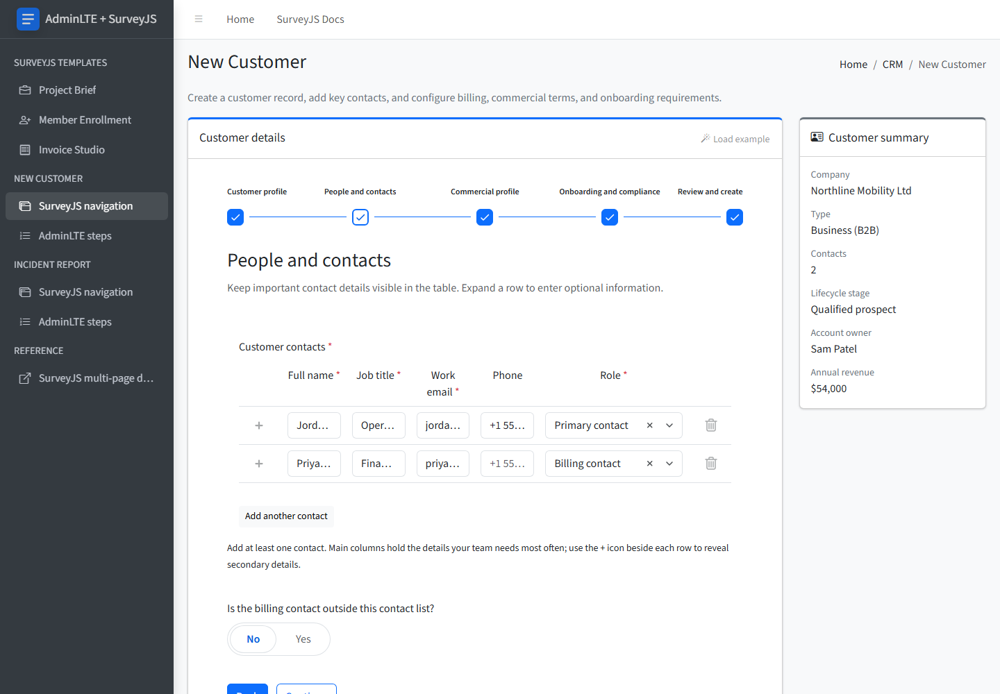
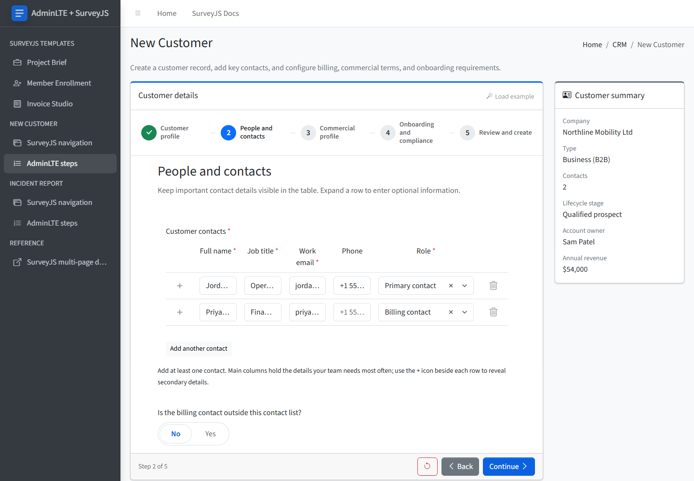
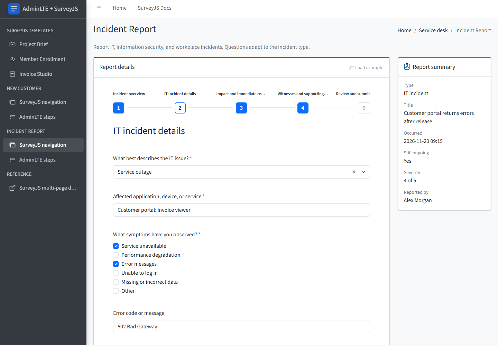
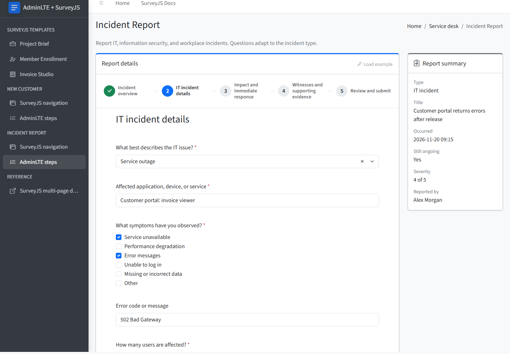

Project Brief
Project intake with collapsible sections, validation, draft saving, and a live budget summary.
Based on AdminLTE Project Add
Three AdminLTE example pages rebuilt so the forms run on the free, MIT-licensed SurveyJS Form Library: validation, calculations, repeatable items, and drafts declared in JSON. Each template is a standalone React + Vite project.

Project intake with collapsible sections, validation, draft saving, and a live budget summary.
Based on AdminLTE Project Add

Sign-up form with email, password-length, and consent validation. Nothing is stored or sent.
Based on AdminLTE Validation

Invoice editor with repeatable line items, tax and shipping calculated by SurveyJS, preview, and print.
Based on AdminLTE Invoice
Each form below is built twice from the same SurveyJS JSON. One version keeps SurveyJS's own page navigation; the other replaces it with AdminLTE-styled steps and buttons. Everything else (layout, summary, validation, result) is the same, so you can compare the navigation on its own.

Five-page CRM onboarding: company profile, a contacts table with expandable rows, revenue estimate, compliance questions, and a review page. SurveyJS renders the progress bar and the Back / Continue / Submit buttons.

Five-page CRM onboarding: company profile, a contacts table with expandable rows, revenue estimate, compliance questions, and a review page. An AdminLTE step list and card-footer buttons drive the SurveyJS page API.

Incident report whose second page changes with the incident type (IT, information security, or workplace), with witnesses, follow-up actions, and evidence uploads. SurveyJS renders the progress bar and the Back / Continue / Submit buttons.

Incident report whose second page changes with the incident type (IT, information security, or workplace), with witnesses, follow-up actions, and evidence uploads. An AdminLTE step list and card-footer buttons drive the SurveyJS page API.